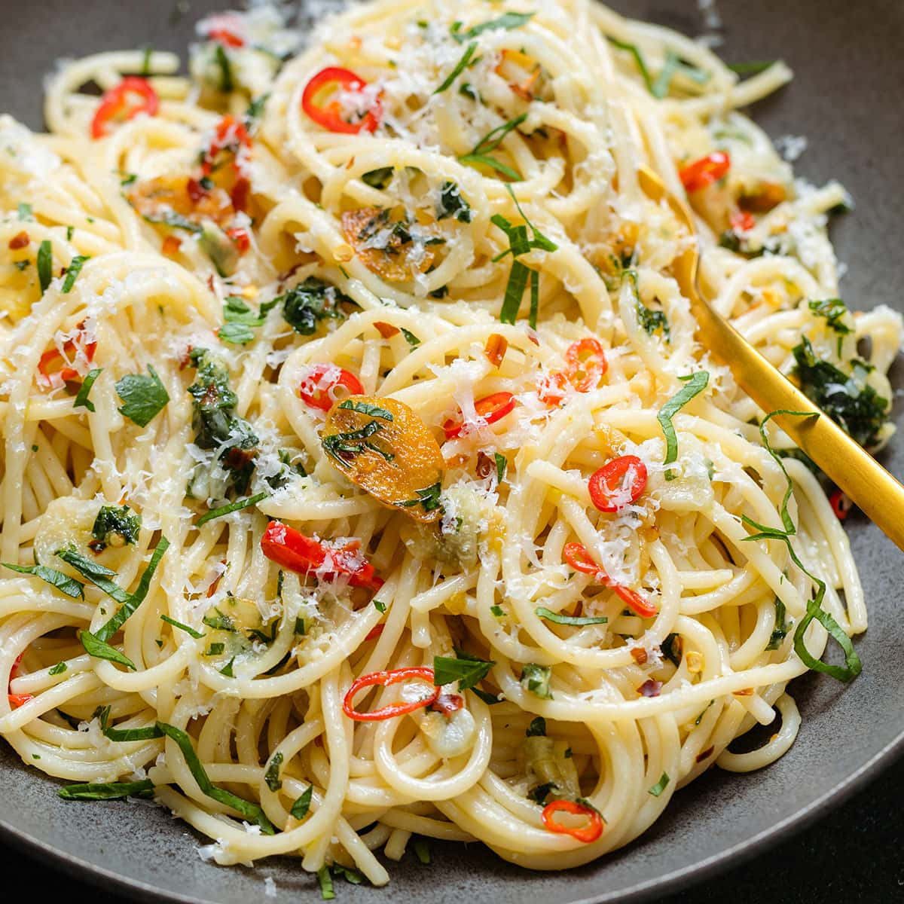

Spaghetti aglio, olio e peperoncino

About spaghetti aglio, olio & peperoncino
Who knew something as simple as this Spaghetti Aglio Olio e Peperoncino could taste so good? Made with lots of extra virgin olive oil, garlic (no need for peeling and chopping if you use Dorot) and red pepper flakes! And the best part? It is ready in 10 minutes!
This dish, a Roman staple, is known for many Italians as a late night necessity. You know, the type of meal you make when you get home at 3am, drunk, after a night out in the city!
Ingredients you will need
- 1 pound dried spaghetti
- 1/2 cup extra virgin olive oil
- 6 cloves of garlic, minced or 6 Dorot garlic cubes
- 1 teaspoon crushed red pepper flakes, or to taste
- 1/2 cup reserved pasta water
- 1/2 cup chopped parsley
- Salt
Instructions!
- Set a large pot of water to boil, generously seasoned with salt, over high heat. Cook the spaghetti according to package instructions, until just shy of al dente.
- While the pasta is cooking, prepare the sauce by combining the olive oil, garlic, red pepper flakes and a pinch of salt in a large skillet. Bring to the stove, over medium low heat, and cook slowly, letting the oil absorb the flavors from the garlic and pepper flakes.
- When the pasta is almost al dente, transfer it to the skillet with the flavored oil along with 1/2 cup of the pasta water. Turn the heat back to medium high and cook, stirring and tossing rapidly until the pasta is al dente and the sauce has thickened/emulsified and coats the pasta. If you want, you can add some more olive oil.
- Remove from heat, add the chopped parsley and serve with Parmigiano Reggiano on the side.